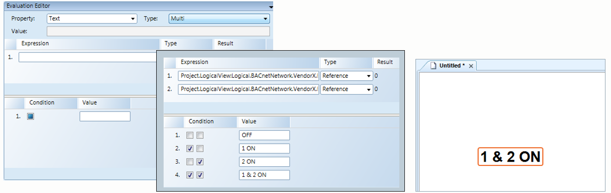

Evaluation Types
There are five evaluation types you can apply to an element or Symbol property in the Graphics Editor.
For more information on evaluations, see Evaluation Expressions and Properties section.
For information on each evaluation type, see:
Animated Evaluations
The Animated evaluation is used to change a property value by setting a value for each frame and then setting the interval times between frames and their associated values. In the Animated evaluation, each value condition is considered a “frame”.
A frame list can consist of up to eight frames. The Animation Interval is the defined time interval between each frame.
Discrete Evaluations
Discrete evaluations allow you to map an expression result or a specific input (Condition) to a specified output (Value). Each evaluation option (Condition/Value) is manually entered into the Evaluation Editor. The Conditions of the expression are evaluated and processed in order of priority from top-to-bottom in the Evaluation Editor view. The Value of the first true Condition is applied to the property and all other conditions are not used.
For example, a data source that reports its values numerically, for example a Power Supply, can be set to display specific text for each value on the graphic. For example:
Discrete Example: Condition and Value | |
Reported Device Value (Condition) | Text Displayed on the Graphic (Value) |
0 | Unplugged |
1 | Charging |
5 | Fully Charged |
7 | Discharging |
Discrete Conditions
The following table shows examples of valid syntax for the Condition fields associated with Discrete evaluations.
Condition Example | Condition is ... |
|---|---|
12.34 | Double literal NOTE: It recommended that you use a range for the condition. |
12 | Name reference. |
<5 | Condition is smaller than 5. |
<=5 | Condition is smaller than or equal to 5. |
>5 | Condition is greater than 5. |
>=5 | Condition is greater than or equal to 5. |
..5 | True, if equal to or less than 5. |
5.. | True, if equal to or greater than 5. |
12.34..56 | True, if value is equal to or between12.34 and 56 |
.. | Always true. This is the same as a blank field. |
| Always true. |
25; 50; 75 | True if value is 25, or 50, or 75. |
&2A | True, if the (zero-based) bits 1, 3, and 5 are true. |
&4 | True, if the (zero-based) bit 2 is true. |
&0002 | True, if the (zero-based) bit 1 is true. |
Example Procedures
The Discrete evaluation is used in the following workflows and procedures:
- Creating a Bar Graph Symbol – This is an example of how to use the evaluation to configure an element’s color property to change based on event conditions.
- Creating a Toggle Button – This procedure describes using the evaluation to create a toggle button on the canvas to command a data point property value.
- Replicating Graphics Objects Based on Functions – In the sub-topic, Replicate a Symbol by Substitution, a Discrete evaluation is used to replicate a Symbol on a graphic.
Linear Evaluations
Linear evaluations allow the mapping of an input range to a different output range, for example, to broaden the range of the expression by mapping the expression result to a minimum and maximum range. The minimum and maximum values are set to the original expression range or you can manually enter a range. A range condition can be another literal value or a symbol from the symbol library. You can have multiple range conditions for each property expression. If a minimum or maximum range is blank, the value is taken from the expression range.
Linear Conditions
Valid syntax and input include double or integer values. The Condition field can also be left blank, in which case the expression range is used.
Example Procedures
The Linear evaluation is used in the following workflows and procedures:
- Creating a Bar Graph Symbol – When you create the Fill and Clip evaluation that will animate the rectangle in the bar graph to rise and fall according to the value.
Multi Evaluations
Multi evaluations allow you to create evaluations for digital data points. Every possible combination of digital data point states can have results which you can set or limit in your evaluation.
The Tri-State check box allows you to manage the number of required conditions for your evaluation.
Every condition has a check box that is associated with an expression created for the evaluation. If you have four expressions, each condition displays four check boxes. Each check box indicates if the expression is True, False, or Unspecified (ignored) for the particular condition. The condition applied is then determined by how the associated check boxes are marked and if the conditions are met. For each condition, the related expression check boxes from the top section of the Evaluation Editor are ordered from left (first expression) to right (last expression).
Multi Conditions
The check box states are represented as follows:
 = The condition is true.
= The condition is true. = The condition is false.
= The condition is false. = The condition is unspecified. It is neither true nor false and therefore corresponding expression is ignored.
= The condition is unspecified. It is neither true nor false and therefore corresponding expression is ignored.
If an expression is not digital, the result is false if the expression result is:
- 0 for integer, double, or any other analog types
- Empty string or “0” for string types.
Example:
In the example below, the Text property is used to display the evaluated value of two data points.

In the above example the text on the canvas displays as follows:
-If expression 1 and 2 are both false, then “OFF” displays.
-If expression 1 is True, and expression 2 is False, “1 ON” displays.
-If expression 1 is False and expression 2 is True, then “2 ON” displays.
-If both expressions 1 and 2 are True, then “1 & 2 ON” displays.
In the example above, both expressions 1 and 2 are True, as they have the same value. Therefore the fourth Condition/Value statement is applied and the text “1 & 2 ON” displays.
NOTE: For Text element evaluations, the Text Type property should be set to Raw Value.
Simple Evaluations and Examples
Simple evaluations are the most basic type of property evaluation. They provide a one-to-one correlation between the input and the graphical output. You can specify a one-to-one substitution or behavior for the expression result of the property, without setting any conditions. Properties and pieces of equipment that have two states, on/off or open/closed. Simple evaluations, unlike the other evaluations, only require you to select a property and enter an expression.
Examples for using Simple evaluations include:
- If a detector is tripped, a flashing Symbol displays.
- When a damper is open, an arrow displays on the graphic.
- If a Symbol goes into alarm, the Symbol flashes on the canvas.
- For an example of Simple evaluation, see the procedure for Creating a Toggle Button.